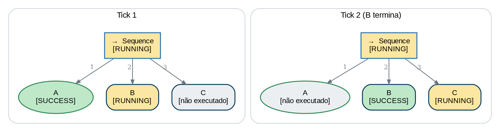
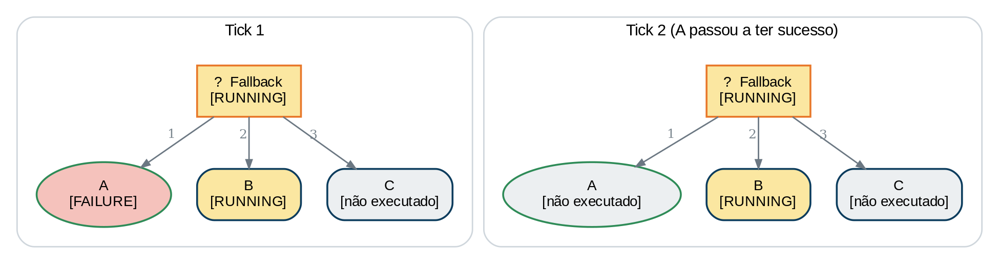
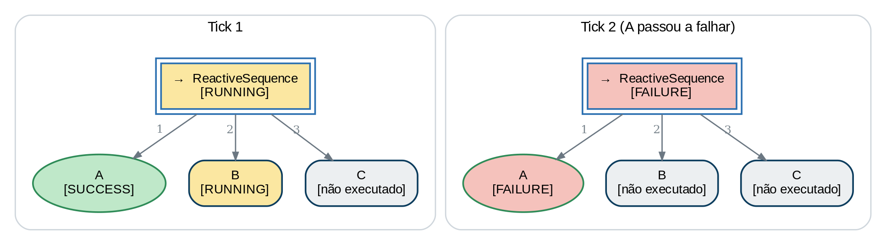
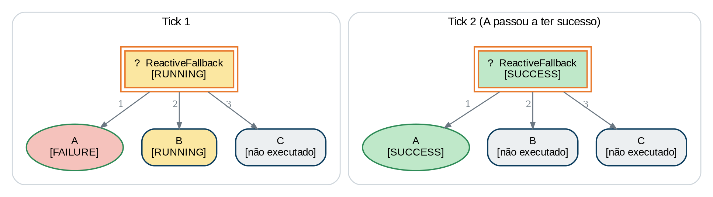
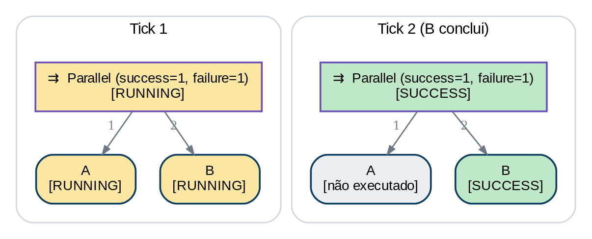
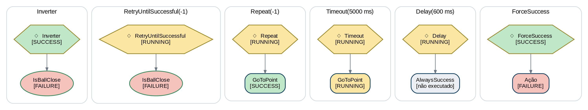
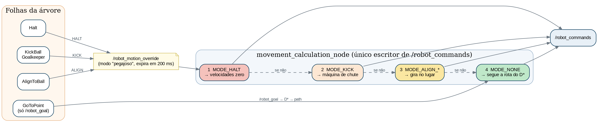

OxeBots · RoboCup SSL Entry Level
Manual da Estratégia OxeBots
Behavior Trees, arquitetura de jogo e implementação para a RoboCup Small Size League – Entry Level

Apresentação do manual · 167 páginas, 24 capítulos, 5 apêndices
O manual em uma página
Parte I — A partida e o ecossistema
O jogo que o software precisa jogar, as regras que afetam o código e a pilha de programas. Caps. 1–3
Parte II — Behavior Trees
A teoria do zero e como a BehaviorTree.CPP a implementa: XML, nós, portas, blackboard. Caps. 4–5
Parte III — O sistema atual
Strategy node, movimento, percepção, ataque, defesa, goleiro, papéis, árvore mestre — e os pontos de atenção. Caps. 6–13
Parte IV — A Master Tree de jogo completo
GameState, árvore mestre por fase, SafetyGate, reinícios, papéis e blackboard, nós novos. Caps. 14–21
Parte V — Implementação
Tutorial de folha, testes, plano de 4 semanas. Caps. 22–24
Apêndices
Glossário, catálogo de nós e mensagens, regras × arquitetura, XMLs propostos, parâmetros. A–E
Esta apresentação segue a ordem do manual; o que é didático (exemplos passo a passo, código completo) está lá, nos capítulos indicados.
OxeBots · Manual da Estratégia OxeBots2
Parte I
A partida e o ecossistema
Antes das árvores: o jogo que o software precisa jogar e a pilha de programas que transforma imagens de câmera em movimento de robô.
Capítulo 1 · Introdução | Capítulo 2 · A partida SSL-EL | Capítulo 3 · Visão geral do software
Parte I — A partida e o ecossistemaCap. 1 — O desafio: jogar uma partida inteira sozinho
Duas entradas
- Imagens das câmeras (SSL-Vision): onde estão bola e robôs
- Comandos do árbitro (Game Controller): em que estado o jogo está
Uma pergunta, 60 vezes por segundo
"O que devo fazer agora?" — depende de comando, papel, bola, outros robôs e do regulamento.
Uma assimetria
Errar uma jogada é aceitável. Violar uma regra de segurança, não. HALT precisa parar o robô — sempre.
Boa parte da arquitetura existe para que a interrupção seja garantida, e não apenas provável.
OxeBots · Manual da Estratégia OxeBots4
Parte I — A partida e o ecossistemaCap. 1 — As camadas do software
- Decisão (papéis + Behavior Tree) escolhe aonde ir e o que fazer
- Planejamento (D*), controle e atuação cuidam do como
- O manual percorre as camadas de baixo para cima (Parte III) e de cima para baixo (Parte IV)
OxeBots · Manual da Estratégia OxeBots5
Parte I — A partida e o ecossistemaCap. 2 — O campo, a bola e os robôs
- Área de jogo 4,5 × 3 m; margem de 0,5 m
- Áreas de defesa 1,35 × 0,5 m; círculo central Ø 1 m
- 3 robôs por time; um pode ser o goleiro
- Robôs totalmente autônomos; sem dribbler
- Bola de golfe laranja, Ø 43 mm
OxeBots · Manual da Estratégia OxeBots6
Parte I — A partida e o ecossistemaCap. 2 — Software compartilhado e etapas da partida
- SSL-Vision: câmeras compartilhadas, com ruído, atraso e falhas
- Game Controller: traduz o árbitro para mensagens de rede — origem do comando
- Autoref: detecta infrações e as reporta ao GC
- O relógio pára em STOP, HALT, preparações e ball placement: o robô passa muito tempo não jogando
- 4 timeouts por jogo (420 s)
OxeBots · Manual da Estratégia OxeBots7
Parte I — A partida e o ecossistemaCap. 2 — Os comandos do árbitro
| Comando | O que exige do robô |
|---|
HALT | ninguém se move nem toca a bola; 2 s para frear; sempre seguido de STOP |
STOP | < 0,75 m/s, ≥ 0,5 m da bola, sem manipulá-la |
BALL_PLACEMENT_* | como STOP; quem posiciona leva a bola ao alvo em 30 s; o outro time fica ≥ 0,5 m do corredor |
PREPARE_KICKOFF_* / PREPARE_PENALTY_* | ir para as posições do reinício |
NORMAL_START | autoriza o kick-off ou o pênalti preparados |
DIRECT_FREE_* | free kick: o favorecido bate; adversários ≥ 0,5 m (inclui lateral, escanteio, tiro de meta) |
FORCE_START | ambos os times podem manipular a bola |
TIMEOUT_* | equipes livres; robôs parados |
NORMAL_START é o mesmo comando para kick-off e pênalti: é preciso lembrar o contexto.
OxeBots · Manual da Estratégia OxeBots8
Parte I — A partida e o ecossistemaCap. 2 — STOP e BALL_PLACEMENT
- STOP: o robô que está a menos de 0,5 m da bola deve recuar; velocidade < 0,75 m/s
- BALL_PLACEMENT: a zona proibida tem formato de estádio em volta do segmento bola → alvo
- Na SSL-EL um time pode optar por não posicionar a bola
OxeBots · Manual da Estratégia OxeBots9
Parte I — A partida e o ecossistemaCap. 2 — Kick-off e pênalti
- Kick-off: todos na própria metade, fora do círculo; só o cobrador pode entrar nele
- Pênalti: goleiro defensor na linha de gol; demais robôs ≥ 1 m atrás da bola; a bola só vai rumo ao gol adversário
- Pênalti: se a bola ainda está em jogo após 10 s, o jogo pára
OxeBots · Manual da Estratégia OxeBots10
Parte I — A partida e o ecossistemaCap. 2 — Free kick
- Adversários ≥ 0,5 m da bola; um cobrador do favorecido
- Atacantes ≥ 0,2 m da área adversária
- A bola entra em jogo ao se mover 0,05 m ou após 10 s
- Lateral, escanteio e tiro de meta são free kicks — não há comandos próprios
OxeBots · Manual da Estratégia OxeBots11
Parte I — A partida e o ecossistemaCap. 2 — A máquina de estados do jogo
- Três famílias: Halted, Stopped, Running
- Qualquer estado →
Halt por HALT - Há mais estados do que comandos:
Kickoff não é um comando
Por isso a arquitetura proposta (Parte IV) deriva uma fase de jogo em vez de reagir ao número do comando.
OxeBots · Manual da Estratégia OxeBots12
Parte I — A partida e o ecossistemaCap. 2 — Faltas que o software pode (e deve) evitar
| Regra | Limite |
|---|
| Velocidade do robô em jogo | ≤ 1,5 m/s |
| Velocidade do robô em STOP | ≤ 0,75 m/s (2 s de tolerância) |
| Velocidade da bola após o chute | ≤ 3 m/s |
| Distância à bola em free kick / kick-off do adversário | ≥ 0,5 m |
| Proximidade da área adversária (STOP e free kick) | ≥ 0,2 m |
| Robô (não goleiro) na própria área | proibido; tocar a bola ali = pênalti |
| Bola retida na área de defesa (goleiro) | ≤ 10 s |
| Interferência no ball placement | ≥ 0,5 m do corredor bola → alvo |
Toda 3ª falta gera cartão amarelo: o número de robôs ativos pode mudar durante a partida.
OxeBots · Manual da Estratégia OxeBots13
Parte I — A partida e o ecossistemaCap. 2 — O que o software precisa garantir
Segurança
- Parar com HALT, sempre
- 0,75 m/s e 0,5 m da bola em STOP
- Modo seguro sem dados
Reinícios
- Posicionar-se nos dois papéis (bate / defende)
- Lembrar o contexto de NORMAL_START
- Respeitar áreas de defesa
Jogo
- Chute ≤ 3 m/s, robô ≤ 1,5 m/s
- Goleiro: ≤ 10 s e linha no pênalti
- Adaptar-se a cartões e goleiro ausente
O Apêndice C relaciona cada regra do regulamento ao componente que a trata.
OxeBots · Manual da Estratégia OxeBots14
Parte I — A partida e o ecossistemaCap. 3 — O workspace e seus pacotes
ssl_ros_bridge
Pontes UDP → ROS 2 (visão e Game Controller)
oxebots_interfaces
Mensagens, serviços e protocolo do rádio
oxebots_observers
game_observer: /game_data, geometria, mapa
oxebots_prediction
Kalman: bola (com atrito) e robôs
oxebots_strategy
strategy_node (BTs), papéis, D*, controlador, folhas e XMLs
oxebots_comms
Drivers: grSim, Ra, rádio NRF24
oxebots_bringup
Launch e configuração YAML
oxebots_trajectory_analysis
Análise de rotas em Python (fora do jogo)
OxeBots · Manual da Estratégia OxeBots15
Parte I — A partida e o ecossistemaCap. 3 — Os processos em execução
- Únicos da equipe: pontes SSL, observer, Kalman, atribuidor de papéis, driver
- Um conjunto por robô (0, 1, 2):
strategy_node, D*, path follower, setpoint - Cada robô tem a sua árvore e a sua blackboard — não existe "árvore do time"
Tópicos como /robot_goal e /robot_commands são compartilhados: cada mensagem carrega o id do robô.
OxeBots · Manual da Estratégia OxeBots16
Parte I — A partida e o ecossistemaCap. 3 — O caminho dos dados
- Visão ~60 Hz → observer → Kalman
- BT a 60 Hz →
/robot_goal - D* a 10 Hz (40 Hz perto da bola)
- Controlador a 20 Hz →
/robot_commands - Canal de exceção:
override (parar, chutar, alinhar)
OxeBots · Manual da Estratégia OxeBots17
Parte I — A partida e o ecossistemaCap. 3 — Como iniciar o sistema
ros2 launch oxebots_bringup ssl-new.launch.py
# mode:=grsim | ra | game (driver de comunicação)
# command_mode:=velocity | point (rádio)
# match:=True (azul × amarelo, domínios 0 e 1)
# bt_xml:=<arquivo>.xml (outra árvore)
# team_color:=blue | yellow
./run_match.sh # partida simulada completa
- Um único launch sobe tudo: pontes, observer, Kalman, 3 conjuntos por robô, papéis e driver
invert_sides é True por padrão só em mode:=ra- Parâmetros em
match_config*.yaml (Apêndice E)
OxeBots · Manual da Estratégia OxeBots18
Parte I — A partida e o ecossistemaCap. 3 — O referencial de coordenadas
- Origem no centro; θ = 0 aponta para +x; anti-horário
- Posições em mm; metros só no
RobotGoal (conversão em um ponto único) - O lado de defesa depende da cor e do simulador:
my_goal_x = ±L/2
OxeBots · Manual da Estratégia OxeBots19
Parte II
Behavior Trees
A teoria necessária para ler, escrever e depurar as árvores do projeto, e a forma como a biblioteca BehaviorTree.CPP a coloca em prática.
Capítulo 4 · Behavior Trees do zero | Capítulo 5 · BehaviorTree.CPP na prática
Parte II — Behavior TreesCap. 4 — Por que uma árvore e não uma máquina de estados
Máquina de estados
- Transições crescem rápido: todo estado precisa de uma saída para "parado"
- Difícil reaproveitar um pedaço
Behavior Tree
- Hierarquia: comportamentos compostos de comportamentos
- A ordem dos irmãos é a prioridade
- Reavaliação contínua → interrupção natural
Ganhos práticos
- Modularidade
- Reatividade
- Legibilidade: o desenho é a documentação
- Desenvolvimento em paralelo
OxeBots · Manual da Estratégia OxeBots21
Parte II — Behavior TreesCap. 4 — Anatomia de uma árvore
- Condição: pergunta ao mundo; sem efeito
- Ação: faz algo (mover, chutar, parar)
- Controle: decide qual filho executar e em que ordem
- Decorador: modifica um filho
- Subárvore: reuso por nome
OxeBots · Manual da Estratégia OxeBots22
Parte II — Behavior TreesCap. 4 — O tick e os três resultados
SUCCESS
A tarefa foi concluída (ou a condição é verdadeira).
FAILURE
A tarefa não pôde ser concluída (ou a condição é falsa).
RUNNING
Ainda em andamento: precisa de mais ticks. É o que permite comportamentos que duram.
O tick é um pulso de decisão (60 por segundo no projeto). Latência de reação ≤ 1 período de tick (~17 ms) + processamento.
OxeBots · Manual da Estratégia OxeBots23
Parte II — Behavior TreesCap. 4 — Sequence e Fallback (1/2)

Sequence: faz A, depois B, depois C
OxeBots · Manual da Estratégia OxeBots24
Parte II — Behavior TreesCap. 4 — Sequence e Fallback (2/2)

Fallback: tenta A, senão B, senão C
- Ambos têm memória: retomam no filho em andamento, sem reavaliar os anteriores
OxeBots · Manual da Estratégia OxeBots25
Parte II — Behavior TreesCap. 4 — O problema da reatividade e os nós reativos (1/2)

ReactiveSequence: a guarda é reavaliada
OxeBots · Manual da Estratégia OxeBots26
Parte II — Behavior TreesCap. 4 — O problema da reatividade e os nós reativos (2/2)

ReactiveFallback: prioridades reavaliadas
Com Fallback/Sequence comuns, um HALT pode passar despercebido durante uma ação longa. Os reativos recomeçam do 1º filho a cada tick.
OxeBots · Manual da Estratégia OxeBots27
Parte II — Behavior TreesCap. 4 — Parallel e decoradores (1/2)

Parallel (success=1): o 1º a concluir encerra
OxeBots · Manual da Estratégia OxeBots28
Parte II — Behavior TreesCap. 4 — Parallel e decoradores (2/2)

Inverter · Retry · Repeat · Timeout · Delay · ForceSuccess
OxeBots · Manual da Estratégia OxeBots29
Parte II — Behavior TreesCap. 4 — Preempção: a razão de ser de tudo isso
- Tick N: a condição
HALT? falha; o atacante segue em RUNNING - Tick N+1: o comando virou HALT → o ramo de maior prioridade tem sucesso
- Os filhos de menor prioridade recebem
halt() - Acontece em no máximo um tick, sem depender de a ação "colaborar"
OxeBots · Manual da Estratégia OxeBots30
Parte II — Behavior TreesCap. 4 — Regra prática e ações assíncronas
Que nó usar?
- Guarda reavaliada → ReactiveSequence
- Escolha com preempção → ReactiveFallback
- Roteiro em ordem → Sequence
- Simultâneo → Parallel
Síncrona × assíncrona
- Síncrona: termina no mesmo tick
- Assíncrona: pode devolver RUNNING e precisa tratar
halt
Regra de ouro
Nunca bloquear dentro de um tick. Um tick travado impede a reação a um HALT.
OxeBots · Manual da Estratégia OxeBots31
Parte II — Behavior TreesCap. 5 — Duas camadas: XML e C++
<BehaviorTree ID="MainTreeCarry">
<ReactiveFallback name="MasterStrategy">
<Sequence name="HaltBranch">
<CheckGCCommand expected="0"/>
<SubTree ID="HaltSubTree" _autoremap="true"/>
</Sequence>
...
<Halt reason="idle"/>
</ReactiveFallback>
</BehaviorTree>
- XML = estrutura da árvore; C++ = o que cada folha faz
- A fábrica liga os dois:
registerNodeType<GoToPointNode>("GoToPoint") - As folhas são compiladas dentro do
strategy_node — não há plugin - Três tipos de folha:
ConditionNode · SyncActionNode · StatefulActionNode
OxeBots · Manual da Estratégia OxeBots32
Parte II — Behavior TreesCap. 5 — O ciclo de vida de uma ação assíncrona
onStart() no 1º tick; onRunning() nos seguintesonHalted() quando o pai interrompe — hora de limpar (soltar override, parar de publicar)onHalted deve ser rápido e idempotente
OxeBots · Manual da Estratégia OxeBots33
Parte II — Behavior TreesCap. 5 — Portas e blackboard
- Porta = atributo XML (
x="1000" ou x="{ball_x}") - Blackboard = memória da árvore; cada
SubTree tem a sua _autoremap copia as chaves que já existem no pai- Folhas leem a blackboard raiz para atravessar subárvores
Porta de entrada sem atributo e sem padrão = erro. A biblioteca não lê uma chave de mesmo nome. Declare o padrão como "{chave}".
OxeBots · Manual da Estratégia OxeBots34
Parte III
O sistema atual
Como cada peça funciona hoje, do nó de estratégia ao movimento, da percepção ao ataque, da defesa aos papéis — e uma lista honesta dos pontos que precisam de atenção.
Cap. 6 strategy_node · 7 Movimento · 8 Percepção · 9 Ataque · 10 Defesa e goleiro · 11 Papéis · 12 Árvore mestre · 13 Pontos de atenção
Parte III — O sistema atualCap. 6 — O strategy_node
- Hospeda a BT de um robô; tick a 60 Hz
- 4 callbacks alimentam a blackboard: jogo, árbitro, geometria, papéis
- Registra 29 folhas + todos os XMLs do diretório como subárvores
- A ação
Halt pede MODE_HALT ao controlador (sempre SUCCESS) - Groot2 na porta 1667+id (azul) / 1677+id (amarelo)
O tick só começa com GameData e geometria; sem comando do árbitro, gc_command = -1 e a árvore cai no jogo normal.
OxeBots · Manual da Estratégia OxeBots36
Parte III — O sistema atualCap. 7 — Do GoToPoint ao comando de roda
GoToPoint é a folha mais usada: 93 usos em 25 XMLstolerance ≤ 0 → nunca devolve SUCCESS- SUCCESS = posição e orientação (0,15 rad) dentro da tolerância
onHalted está vazio: o último objetivo continua valendo
OxeBots · Manual da Estratégia OxeBots37
Parte III — O sistema atualCap. 7 — Restrição de áreas
- O alvo é corrigido para fora da área adversária (todos) e da própria (exceto o goleiro), com margem de 100 mm
- Há 3 camadas:
GoToPoint, parede no mapa do D*, clamp de velocidade no controlador ignore_area só desliga a camada 1
OxeBots · Manual da Estratégia OxeBots38
Parte III — O sistema atualCap. 7 — O planejador D* Lite
- Grade de 5 cm publicada pelo observer; robôs inflados em 150 mm
- Aliados (0,20 m) e bola (0,15 m) como obstáculos dinâmicos
- Replanejamento incremental; 10 Hz, 40 Hz perto da bola
- Sem caminho → rota vazia → o robô pára
straight_line: reta com desvio local da bola; não desvia de robôs
OxeBots · Manual da Estratégia OxeBots39
Parte III — O sistema atualCap. 7 — O controlador de movimento (1/2)

Pure pursuit: lookahead de 100 mm
OxeBots · Manual da Estratégia OxeBots40
Parte III — O sistema atualCap. 7 — O controlador de movimento (2/2)

Prioridade: HALT > KICK > ALIGN > rota
- Ganho linear 2,0,
max_linear_speed = 1,0 m/s; alinhamento tem prioridade a < 100 mm do alvo - Override é pegajoso e expira em 200 ms sem renovação
OxeBots · Manual da Estratégia OxeBots41
Parte III — O sistema atualCap. 7 — O chute e o modo "ponto" do rádio
- FIRING 200 ms:
kick_speed + avanço de 0,5 m/s na direção do heading - Cooldown 600 ms: robô parado; evita "metralhadora"
KickBall limita o pedido a 3,0 m/s e devolve SUCCESS quando kick_fire_count sobe- Rádio: modo velocidade ou ponto (
trajectory_setpoint_node)
OxeBots · Manual da Estratégia OxeBots42
Parte III — O sistema atualCap. 8 — Percepção, predição e geometria
game_observer: mm/rad, melhor bola (confiança ≥ 0,3), aliados × adversários, geometria com fallbacks EL- Inversão de lado (
invert_sides): (−x, −y, θ+π) — só para o simulador Ra - Kalman: bola 4D com atrito do carpete; robôs 6D
Limitações: GameData sem carimbo de tempo · robôs que somem não expiram · sem bola, nada é publicado · leitura não atômica.
OxeBots · Manual da Estratégia OxeBots43
Parte III — O sistema atualCap. 9 — O atacante: pontos calculados em torno da bola
UpdateBallPosition: pré-chute a 400 mm atrás da bola; prontidão com histerese 150/600 mmCalculateInterception: busca de 0,05 a 3 s onde o robô alcança a bola prevista- Pontos: pré-chute · captura (115 mm) · carga (+120 mm) · mira · contorno (600 mm lateral)
OxeBots · Manual da Estratégia OxeBots44
Parte III — O sistema atualCap. 9 — A árvore do atacante (1/2)

AttackerLogicLoop
OxeBots · Manual da Estratégia OxeBots45
Parte III — O sistema atualCap. 9 — A árvore do atacante (2/2)

ApproachAndKick: Shoot › Realign › Carry
- Falhas intencionais (
ball_contact_threshold_mm, ball_side_check) fazem a árvore recomeçar do zero com a posição real da bola
OxeBots · Manual da Estratégia OxeBots46
Parte III — O sistema atualCap. 9 — As quatro fases do atacante
- 1 aproximação (D*) → 2 realinhar → 3 chutar (≤ 3 m/s)
- 4 conduzir quando a bola está na nossa metade
PrecisionKick é legado: escreve direto em /robot_commands e não limita o chute
OxeBots · Manual da Estratégia OxeBots47
Parte III — O sistema atualCap. 10 — O defensor (1/2)

Bola no campo adversário → ShadowBall; posse deles → MarkOpponent
OxeBots · Manual da Estratégia OxeBots48
Parte III — O sistema atualCap. 10 — O defensor (2/2)

ShadowBall (a) e MarkOpponent (b)
- Nunca entra na área (limite: área + 200 mm); não disputa a bola; as ações são síncronas e sem
onHalted
OxeBots · Manual da Estratégia OxeBots49
Parte III — O sistema atualCap. 10 — O goleiro (1/2)

Linha de gol × sair e afastar
OxeBots · Manual da Estratégia OxeBots50
Parte III — O sistema atualCap. 10 — O goleiro (2/2)

Árvore
- Estado 2: linha do gol, 120 mm à frente, segue o y da bola
- Estado 1: bola na área → pré-chute 200 mm atrás, avança e chuta ≤ 3 m/s para a lateral
- Ainda não trata pênalti nem o limite de 10 s; id fixo
robot_id == 0
OxeBots · Manual da Estratégia OxeBots51
Parte III — O sistema atualCap. 11 — Papéis dinâmicos
role_assigner (global): custo = 2,0·r + 1,0·(1 − cos θ)- Histerese de custo 2,5 e de tempo 2 s evitam a troca-troca
- A árvore consome por
IsMyRole; o goleiro é fixo (id 0)
OxeBots · Manual da Estratégia OxeBots52
Parte III — O sistema atualCap. 11 — Histerese em ação
- O robô 2 só vira atacante quando supera o desconto do atual e o cooldown de 2 s permite
- Não conhece o estado de jogo nem robôs ativos
OxeBots · Manual da Estratégia OxeBots53
Parte III — O sistema atualCap. 12 — A árvore mestre atual (master_strategy_carry.xml)
ReactiveFallback na raiz: a ordem dos ramos é a prioridade. Jogo corrido é o que sobra quando nenhum ramo de bola parada casa.
OxeBots · Manual da Estratégia OxeBots54
Parte III — O sistema atualCap. 12 — Subárvores de bola parada (atuais) (1/2)

KickOffTree: posições literais
OxeBots · Manual da Estratégia OxeBots55
Parte III — O sistema atualCap. 12 — Subárvores de bola parada (atuais) (2/2)

StopSubTree
PenaltyTree, FreeKickTree, OppSetPieceTree; CornerTree/ThrowInTree dependem de flags nunca escritas
OxeBots · Manual da Estratégia OxeBots56
Parte III — O sistema atualCap. 13 — Pontos de atenção do sistema atual
| Ponto | Consequência | Resolvido em |
|---|
| TIMEOUT e BALL_PLACEMENT sem ramo | robôs jogam com o jogo parado | Caps. 15, 16, 18 |
| NORMAL_START sem contexto | pênalti/kick-off executados pelo jogo corrido | Cap. 15 |
STOP com KeepDistance inoperante | atacante age durante o STOP | Caps. 17, 21 |
| Dados sem idade e sem watchdog | robô se move com a visão caída ou a BT travada | Cap. 17 |
Sem teto 0,75 m/s; PrecisionKick sem clamp | faltas de velocidade | Cap. 17 |
| Coordenadas literais e lado fixo | amarelo e azul se comportam diferente | Caps. 15, 20 |
| Goleiro e papéis fixos | sem goleiro alternativo nem degradação | Caps. 19, 20 |
onHalted vazio | preempção não pára o movimento | Caps. 17, 21 |
| Flags nunca escritas, IDs duplicados | árvores mortas, registro ambíguo | Caps. 18, 24 |
Não é crítica: é o mapa preciso do que resolver para jogar uma partida inteira.
OxeBots · Manual da Estratégia OxeBots57
Parte III — O sistema atualCap. 13 — NORMAL_START sem contexto
- Ao chegar
NORMAL_START (cmd 2) nenhum ramo de bola parada casa — o robô cai no jogo corrido - No pênalti, todos os robôs entram em ação (violando o posicionamento)
ExecutePenalty da PenaltyTree nunca é alcançado
OxeBots · Manual da Estratégia OxeBots58
Parte III — O sistema atualCap. 13 — O lado do campo
- Os literais pressupõem lados diferentes entre si: kick-off → x>0; set-piece e free kick → x<0
- Para qualquer time, algum cai na metade errada — o defensor do kick-off ali é falta
- O árbitro informa
blue_team_on_positive_half, que o software ignora
OxeBots · Manual da Estratégia OxeBots59
Parte IV
A Master Tree de jogo completo
A arquitetura proposta: um estado de jogo único e confiável, uma árvore mestre com prioridades claras, uma subárvore para cada situação regulamentar, papéis dinâmicos e contratos de dados.
Cap. 14 Arquitetura · 15 GameState · 16 Master Tree v2 · 17 Segurança e STOP · 18 Reinícios · 19 Jogo corrido · 20 Papéis e blackboard · 21 Nós novos
Parte IV — A Master Tree de jogo completoCap. 14 — O que uma partida inteira exige
Cobertura completa
Cada comando, em cada estágio, tem comportamento definido — nenhum cai num default por acaso.
Segurança acima de tudo
HALT para; dado ausente → estado seguro; limites valem independentemente da árvore.
Lado e cor
Mesmo código para amarelo e azul; troca de lado no 2º tempo sem retrabalho.
Coordenação
Papéis exclusivos, trocas estáveis, degradação com menos robôs.
Testabilidade
Cada ramo e transição verificável sem robôs.
OxeBots · Manual da Estratégia OxeBots61
Parte IV — A Master Tree de jogo completoCap. 14 — Arquitetura híbrida
- Mantém uma BT por robô (o que já existe) e move para serviços de equipe o que é coletivo ou crítico
referee_state_node ✦ → GameState · role_assigner ampliado ✦ · observer com carimbo de tempo ✦ · Master Tree v2 ✦ · SafetyGate ✦
Alternativas descartadas: centralizada (reescreve as folhas; um tick lento atrasa todos) e só por robô (cada árvore reconstrói o estado do jogo sozinha).
OxeBots · Manual da Estratégia OxeBots62
Parte IV — A Master Tree de jogo completoCap. 14 — As camadas de decisão
- BT escolhe por prioridade e reage; não guarda estado entre ticks
- Estado do árbitro, papéis e vigilância de dados ficam em nós ROS 2; a árvore consulta
- Um dono por decisão: fase →
referee_state_node; papéis → role_assigner; ação → BT do robô; comandos → controlador
OxeBots · Manual da Estratégia OxeBots63
Parte IV — A Master Tree de jogo completoCap. 15 — GameState e referee_state_node
- Interpreta uma vez, corretamente e entrega pronto a todos os robôs
phase · restart_ctx · we_favored · speed_limit · ball_min_distance · our_goal_positive_x · stale …- Descarta repetições por
command_counter - Lembra o contexto do reinício (resolve o NORMAL_START)
OxeBots · Manual da Estratégia OxeBots64
Parte IV — A Master Tree de jogo completoCap. 15 — Do comando à fase
- Legados normalizados:
INDIRECT → FREE_KICK; GOAL → STOP - Pergunta aberta (H-01): que
command o GC publica durante o Run? → capturar um log real (log2bag)
OxeBots · Manual da Estratégia OxeBots65
Parte IV — A Master Tree de jogo completoCap. 16 — Master Tree v2: um ramo por fase
Cada ramo = ReactiveSequence(guarda, subárvore). Quando nada casa, o robô pára — o oposto do mestre atual.
OxeBots · Manual da Estratégia OxeBots66
Parte IV — A Master Tree de jogo completoCap. 16 — O padrão "nosso ou deles" e as guardas reativas
<ReactiveSequence name="FreeKickBranch">
<CheckGameState phase="FREE_KICK"/>
<ReactiveFallback>
<ReactiveSequence>
<WeAreFavored/>
<SubTree ID="FreeKickOurTree"/>
</ReactiveSequence>
<SubTree ID="FreeKickTheirTree"/>
</ReactiveFallback>
</ReactiveSequence>
- A cor do time não aparece nos ramos: já virou
we_favored - Se a subárvore "nossa" falha, cai na "deles" (retirada segura)
- Guarda em
Sequence comum não é reavaliada enquanto um filho roda; por isso toda guarda é ReactiveSequence
OxeBots · Manual da Estratégia OxeBots67
Parte IV — A Master Tree de jogo completoCap. 16 — A árvore ao longo de uma sequência de fases
- RUN → STOP → PREPARE_KICKOFF → KICKOFF → RUN
- O ramo anterior recebe
halt() assim que o novo assume; o GameState carrega todo o contexto - Três trajetórias verificadas: partida completa, troca de papéis e dado velho com ação em andamento
OxeBots · Manual da Estratégia OxeBots68
Parte IV — A Master Tree de jogo completoCap. 17 — Segurança: SafetyGuard e StopTree (1/2)

StopSubTree proposta
OxeBots · Manual da Estratégia OxeBots69
Parte IV — A Master Tree de jogo completoCap. 17 — Segurança: SafetyGuard e StopTree (2/2)

SafetyGate no controlador
SafetyGuard: IsDataFresh falha (GC 500 ms · pose 150 ms · bola 300 ms) → Halt- STOP:
SetMotionLimit 0.75 → recua se a bola < 650 mm, senão HoldPosition
OxeBots · Manual da Estratégia OxeBots70
Parte IV — A Master Tree de jogo completoCap. 17 — SafetyGate: segurança em duas camadas
1 HALT zera a velocidade
mesmo que haja override ou rota
2 Teto por fase
0,75 m/s nos estados de parada; 1,5 m/s no jogo
3 Watchdog de 500 ms
sem objetivo/override → comandos zero; uma árvore silenciosa pára o robô
4 Chute ≤ 3,0 m/s
para qualquer origem, inclusive folhas legadas
As regras 1 e 3 usam só informação local ao controlador: valem mesmo se o strategy_node morrer.
OxeBots · Manual da Estratégia OxeBots71
Parte IV — A Master Tree de jogo completoCap. 18 — Posições legais sem coordenadas literais
ComputeLegalSlot calcula a posição de cada slot a partir de own_goal_x e side_sign- Slots:
kickoff_kicker · kickoff_def · penalty_kicker · penalty_behind · freekick_support · wall · retreat - O mesmo slot vale para os dois lados do campo
OxeBots · Manual da Estratégia OxeBots72
Parte IV — A Master Tree de jogo completoCap. 18 — Kick-off e o cobrador (1/2)

PrepareKickoffOurTree
OxeBots · Manual da Estratégia OxeBots73
Parte IV — A Master Tree de jogo completoCap. 18 — Kick-off e o cobrador (2/2)

RestartKickerTree + KickOnce
KickOnce: chuta ≤ 3 m/s e confirma que a bola se moveu 50 mm; prazo de 10 s- A mesma sequência de cobrança serve a kick-off, pênalti e free kick
OxeBots · Manual da Estratégia OxeBots74
Parte IV — A Master Tree de jogo completoCap. 18 — Pênalti
- Nosso: cobrador atrás da bola sem tocar; demais ≥ 1 m atrás; execução com chute direto ao gol
- Deles:
PenaltyKeeperLine — goleiro na linha de gol até WaitBallInPlay; depois, goleiro normal - O goleiro não sai da linha mesmo se a bola "entrar na área"
OxeBots · Manual da Estratégia OxeBots75
Parte IV — A Master Tree de jogo completoCap. 18 — Free kick e ball placement (1/2)

FreeKickOurTree (substitui corner/throw-in/kick-in)
OxeBots · Manual da Estratégia OxeBots76
Parte IV — A Master Tree de jogo completoCap. 18 — Free kick e ball placement (2/2)

BallPlacementTheirTree
- Do adversário:
wall a ≥ 0,5 m da bola; ball placement dele → AvoidPlacementCorridor (margem 550 mm) - Ball placement nosso (
PlaceBall, 30 s): recomendado como pós-MVP; a SSL-EL permite o opt-out
OxeBots · Manual da Estratégia OxeBots77
Parte IV — A Master Tree de jogo completoCap. 19 — Jogo corrido e degradação (1/2)

NormalPlayTree
OxeBots · Manual da Estratégia OxeBots78
Parte IV — A Master Tree de jogo completoCap. 19 — Jogo corrido e degradação (2/2)

Papéis com 3, 2 e 1 robô
HasRole substitui IsMyRole + IsRobotId; robô sem papel fica parado- Goleiro: id do árbitro, modo
penalty_def, BallHeldTimer (8 s), FAILURE sem dados - Defensor: Kalman no lugar da diferença finita; ataque sem
PrecisionKick
OxeBots · Manual da Estratégia OxeBots79
Parte IV — A Master Tree de jogo completoCap. 20 — Papéis ampliados e blackboard proposta
RoleAssignment: goalkeeper_id · attacker_id · defender_id · kicker_id · epoch · active_ids- Cobrador travado durante o reinício; histereses desligadas nele
refresh() no início de cada tick → chaves consistentes entre si- Idade dos dados:
gc_age_ms, pose_age_ms, ball_age_ms - side_sign e own_goal_x vêm do árbitro;
invert_sides fica só para o simulador
OxeBots · Manual da Estratégia OxeBots80
Parte IV — A Master Tree de jogo completoCap. 21 — Os 14 nós novos
Condições (6)
CheckGameState · WeAreFavoredIsDataFresh · HasRoleBallHeldTimer · WaitBallInPlay
Ações síncronas (3)
ComputeLegalSlotComputePlacementApproachSetMotionLimit
Ações assíncronas (5)
HoldPosition · KickOncePlaceBall · PenaltyKeeperLineAvoidPlacementCorridor
Adaptações: GoToPoint (onHalted) · KeepDistance · PrecisionKick · Goalkeeper · UpdateBallPosition · controlador (SafetyGate) · strategy_node · role_assigner · observer/GameData.
OxeBots · Manual da Estratégia OxeBots81
Parte V
Implementação
Como criar uma nova folha, como validar o comportamento do time sem robôs e como dividir o trabalho nas quatro semanas até uma versão jogável.
Capítulo 22 · Tutorial de folha | Capítulo 23 · Testes | Capítulo 24 · Plano
Parte V — ImplementaçãoCap. 22 — Tutorial: criando uma folha
- Nó ROS 2 = processo · nó de BT = objeto dentro da árvore, que usa o nó ROS do
strategy_node - Passos: definir → cabeçalho → implementação → registrar → CMake → XML → teste → simular e documentar
- Exemplo:
HoldPosition (publica a pose atual; onHalted idempotente) - Publisher × serviço × action: só use action se outro processo executa a tarefa
OxeBots · Manual da Estratégia OxeBots83
Parte V — ImplementaçãoCap. 23 — A pirâmide de testes
- Base: validador estático de XML (portas sem valor, IDs duplicados, subárvores) — o mais barato e valioso
- Harness de semântica da biblioteca na versão do container (4.10)
- Integração com
launch_testing; replay de rosbags; falhas injetadas - Topo: partidas completas simuladas
OxeBots · Manual da Estratégia OxeBots84
Parte V — ImplementaçãoCap. 23 — Cenários e critérios de aceitação
26 cenários (SC-01…26)
- Sem GC → parado
- HALT/STOP/TIMEOUT
- Kick-off, pênalti, free kick: dois lados
- Ball placement, troca de lado, cartão
SIGSTOP na BT → parado em 500 ms
Critérios (a calibrar)
- HALT: v = 0 em ≤ 300 ms
- STOP: |v| ≤ 0,75 m/s em ≥ 99%
- Chute ≤ 3,0 m/s em 100%
- Dado velho → parado em ≤ 500 ms
- 2 partidas de 5 min sem faltas por software
Definição de pronto
- Contrato documentado
- XML passa no validador
- Teste de comportamento e de
halt - Evidência de execução
- Catálogos atualizados
OxeBots · Manual da Estratégia OxeBots85
Parte V — ImplementaçãoCap. 24 — Frentes de trabalho e prioridades
| Frente | Escopo | Tarefas |
|---|
| GC | GameState, referee_state_node, lançamento | G01–G06 |
| MASTER | MainTreeEL, condições, observabilidade, limpeza | A01–A06 |
| DADOS | carimbo de tempo, refresh(), lado, fim das literais | D01–D04 |
| MOV | SafetyGate, GoToPoint, KeepDistance, PrecisionKick, D* | M01–M06 |
| ESTRAT | Stop, reinícios, placement, ataque, defesa | E01–E10 |
| GK · PAPEIS · TESTE · DOC | goleiro, atribuidor, validação, documentação | K · P · T · X |
49 tarefas: 25 P0 (segurança/legalidade), 20 P1 (MVP jogável), 4 P2 (evolução). Kick-off, free kick e pênalti são obrigatórios; ball placement próprio é opcional.
OxeBots · Manual da Estratégia OxeBots86
Parte V — ImplementaçãoCap. 24 — Dependências e caminho crítico
- Destravam o resto: G01 (GameState), D03 (blackboard e lado), M01 (SafetyGate)
- Caminho crítico: G01 → G02 → A01 → E01 → A02 → E05 → E06/E07 → A06 → T07 → T09
- Um único PR de interfaces na semana 1 (msgs);
strategy_node.cpp com um dono
OxeBots · Manual da Estratégia OxeBots87
Parte V — ImplementaçãoCap. 24 — Cronograma de quatro semanas
- S1 contratos e base segura · S2 núcleo de jogo · S3 integração e regras · S4 ponta a ponta
- Pressupõe ≥ 5 pessoas; ordem de corte: ball placement próprio → team client → ajuste de papéis → testes P1
OxeBots · Manual da Estratégia OxeBots88
Parte V — ImplementaçãoRiscos e como começar
Riscos principais
- Comando em Run desconhecido → capturar log real
- Mudança de mensagens → um PR de interfaces
- Semântica 4.6 × 4.10 → harness de testes
- Submódulos em branches de feature → fixar tags
- Escopo maior que a equipe → ordem de corte
Como começar
- Pegue uma tarefa da sua frente em
backlog.csv - Leia o contrato nos Caps. 15–21
- Feche contratos de interface na semana 1
- Implemente com dublês; escreva o teste junto
- Valide o XML; atualize o manual no mesmo PR
OxeBots · Manual da Estratégia OxeBots89
Parte V — ImplementaçãoApêndices e material de apoio
A · Glossário
Termos do projeto e do regulamento
B · Nós, mensagens e tópicos
Catálogo das 29 folhas, mensagens e tópicos
C · Regras × arquitetura
30 regras: cobertura hoje e componente responsável
D · XMLs propostos
Mestre, STOP, reinícios, jogo corrido, ball placement
E · Parâmetros e execução
Launch, YAML, portas de rede, parâmetros propostos
Anexos
backlog.csv · matriz-regras.csv · xml-proposto/
Manual completo: docs/manual/Manual-Estrategia-OxeBots.pdf · Fontes e scripts: docs/manual/
OxeBots · Manual da Estratégia OxeBots90
Parte V — ImplementaçãoEm resumo
Hoje
Um sistema que percebe, planeja, ataca e defende — mas com lacunas de cobertura de comandos, segurança e lado.
Proposta
GameState único · Master Tree por fase · SafetyGate · papéis dinâmicos · posições calculadas.
Caminho
4 semanas, 49 tarefas, contratos primeiro, testes junto com o código.
Próximo passo: fechar os contratos de interface (GameState, RoleAssignment, ComputeLegalSlot, KickOnce) e capturar um log real do Game Controller.
OxeBots · Manual da Estratégia OxeBots91